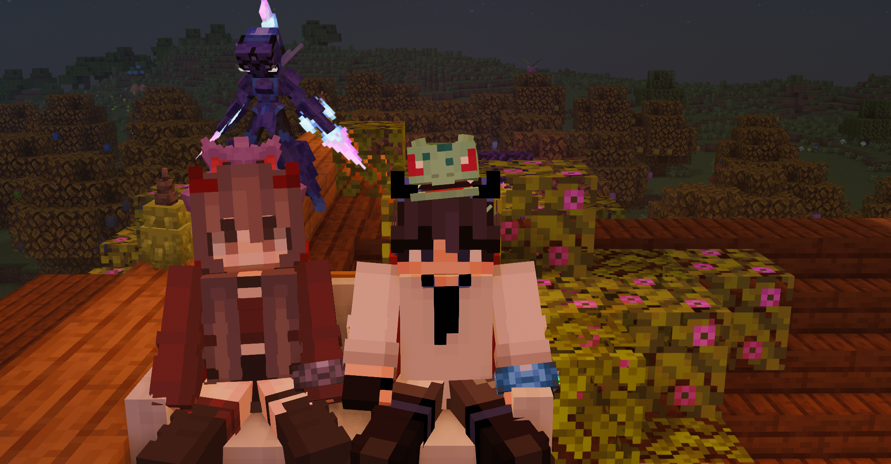

Jasmine & Khairul Aqib
2 October 2026
Advancement Made!
Till Death Do Us Part
Marriage
Jasmine's Ring
Khairul's Ring
Nur Liyana Jasmine and Khairul Aqib
were married on the server
on 2 October 2026
10
ten months, 2 December 2025 to 2 October 2026

Our Vows
by Khairul Aqib
We met in a game and somehow you became the person I build everything around.
I promise to listen before I defend myself. I promise to tell you the truth, even when saying nothing would be easier.
I promise to remember. Not perfectly. But I will write things down and I will keep trying, every day.
I promise to stay when it is hard, and to tell you when it is.
I am not promising to be perfect. I will get things wrong, and I will own it when I do. But I am yours, and I am not going anywhere.
Khairul Aqib
2 October 2026